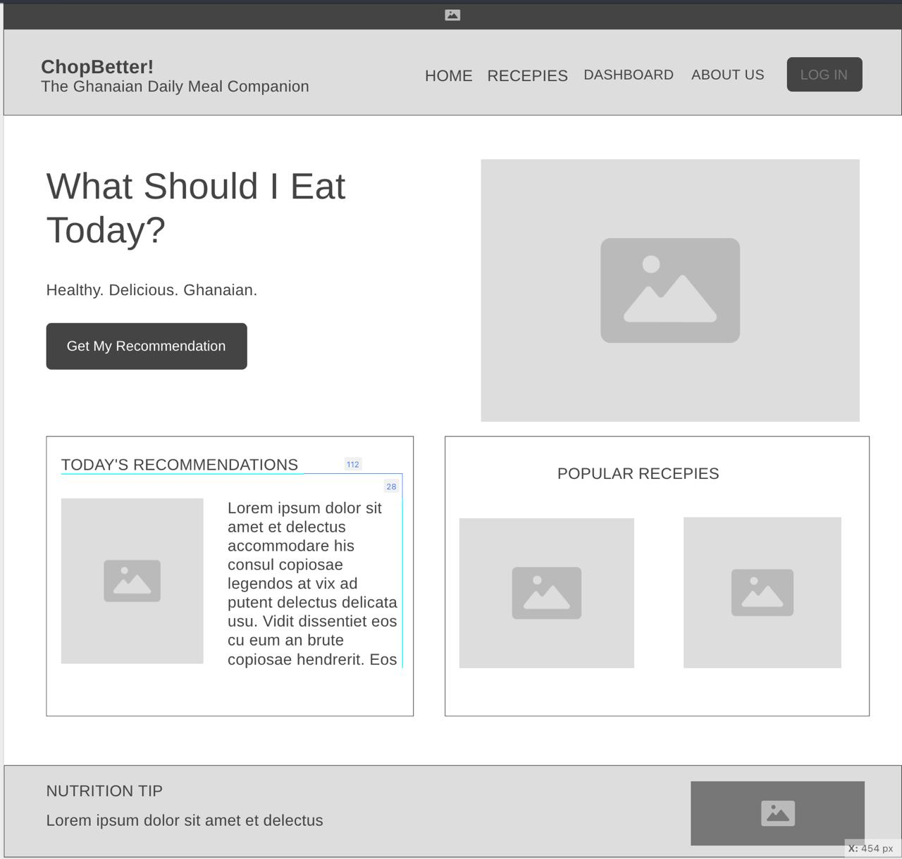
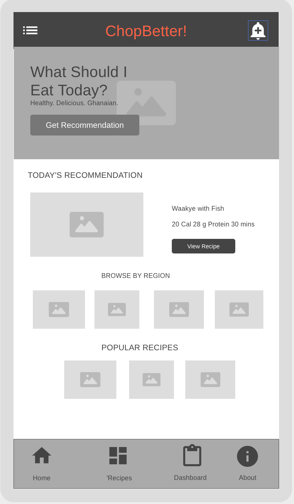

1. Site Name
ChopBetter!
ChopBetter! is a Ghanaian meal recommendation platform that helps users discover nutritious local dishes based on their dietary preferences, nutritional goals, and region.
The name was chosen because it combines the Ghanaian expression "chop" (to eat food) with the goal of helping people make healthier eating decisions.
Domain Name: chopbetter.com
2. Site Purpose
ChopBetter! helps Ghanaians and food lovers discover healthy traditional meals, browse recipes, learn nutritional information, and track eating habits through a personalized dashboard.
- Meal recommendations
- Recipe browsing
- Regional food discovery
- Nutrition tracking
- Personalized dashboard
- Healthy eating guidance
3. User Scenarios
- What healthy Ghanaian meal should I eat today based on my goals?
- Which traditional dishes are popular in different regions of Ghana?
- How many calories and nutrients are contained in Waakye with Fish?
- Can I save favorite meals and monitor my nutrition progress?
4. Color Schema
#006B3F
Navigation, headings, dashboard sections
#F4C430
Buttons, highlights, call-to-actions
#CE1126
Notifications and accent elements
#F8F4EA
Page backgrounds and content areas
5. Typography
Archivo Black
Used for hero titles, page titles and major headings.
Cinzel
Used for section headings and important labels.
DM Sans
Used for navigation, paragraphs, cards, recipes and dashboard content.
6. Homepage Wireframes
The wireframes below illustrate the desktop and mobile layouts for the ChopBetter! homepage.
Desktop Version

Mobile Version
